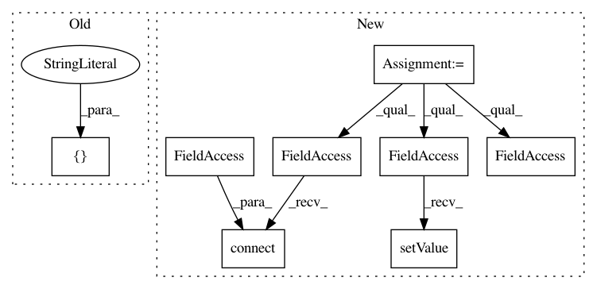

38e4e53a29a3818f17d9cf62aeac119faf4fc055,ilastik/applets/networkClassification/opNNclass.py,OpNNClassification,__init__,#OpNNClassification#,60
Before Change
self.ModelPath.setValue( [] )
self.opMultiPredictionPipeline = OpMultiLaneWrapper(OpPredictionPipeline, parent=self, promotedSlotNames =["InputImage"] )
self.opMultiPredictionPipeline.InputImage.connect(self.InputImage)
self.opMultiPredictionPipeline.Classifier.connect(self.Classifier)
self.opMultiPredictionPipeline.NumClasses.connect(self.NumClasses)
After Change
self.prediction_cache.inputs["fixAtCurrent"].connect(self.FreezePredictions)
self.CachedPredictionProbabilities.connect(self.prediction_cache.Output)
self.opPredictionSlicer = OpMultiArraySlicer2(parent=self)
self.opPredictionSlicer.name = "opPredictionSlicer"
self.opPredictionSlicer.Input.connect(self.prediction_cache.Output)
self.opPredictionSlicer.AxisFlag.setValue("c")
self.PredictionProbabilityChannels.connect(self.opPredictionSlicer.Slices)
def inputResizeHandler( slot, oldsize, newsize ):
if ( newsize == 0 ):
In pattern: SUPERPATTERN
Frequency: 3
Non-data size: 8
Instances
Project Name: ilastik/ilastik
Commit Name: 38e4e53a29a3818f17d9cf62aeac119faf4fc055
Time: 2018-04-25
Author: jonas.massa@iwr.uni-heidelberg.de
File Name: ilastik/applets/networkClassification/opNNclass.py
Class Name: OpNNClassification
Method Name: __init__
Project Name: ilastik/ilastik
Commit Name: c164541f82302434ff40542b32851da4969a3c5e
Time: 2013-02-12
Author: bergs@janelia.hhmi.org
File Name: workflows/pixelClassification/pixelClassificationWorkflow.py
Class Name: PixelClassificationWorkflow
Method Name: _initBatchWorkflow
Project Name: ilastik/ilastik
Commit Name: af2d9c92e3e59ffc435c3f513c2caf179acb3252
Time: 2017-03-03
Author: dominik.kutra@gmail.com
File Name: ilastik/workflows/examples/thresholdMasking/thresholdMaskingWorkflow.py
Class Name: ThresholdMaskingWorkflow
Method Name: __init__